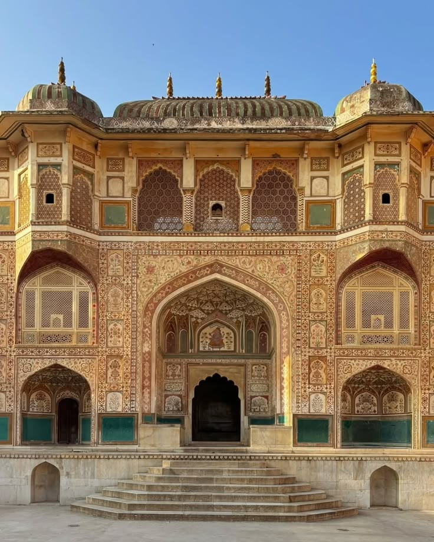
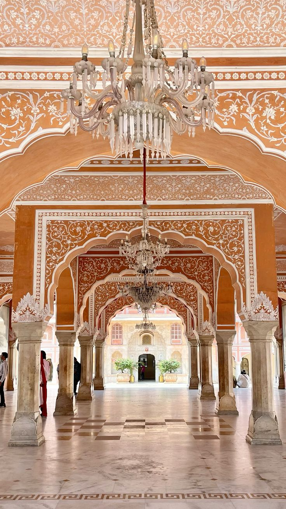
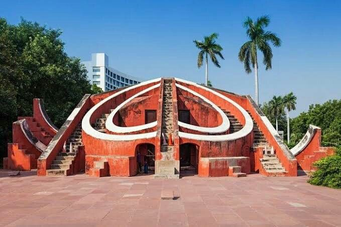
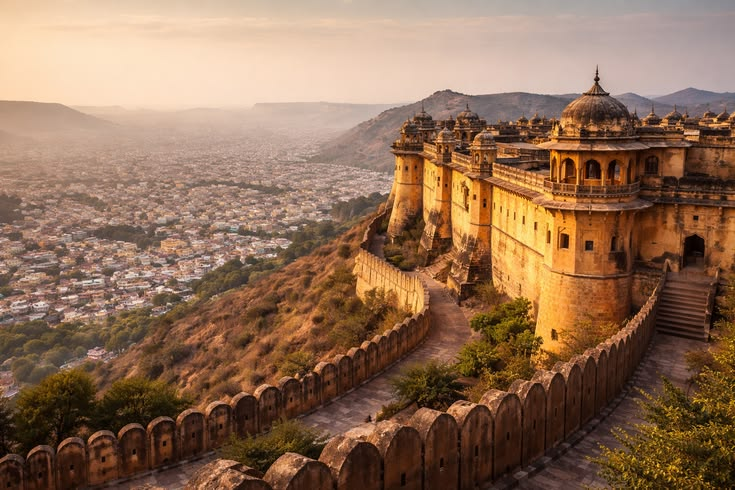
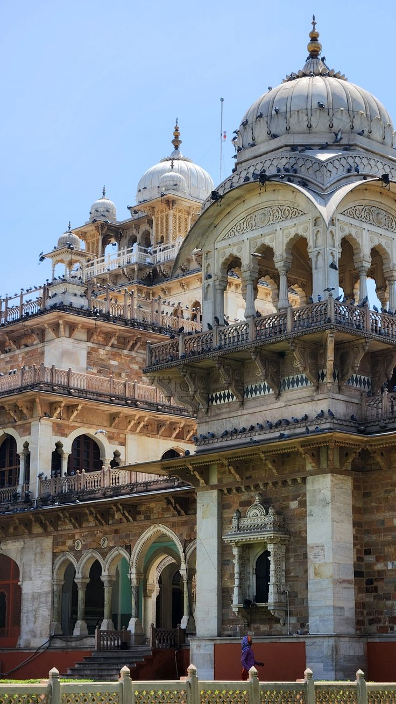
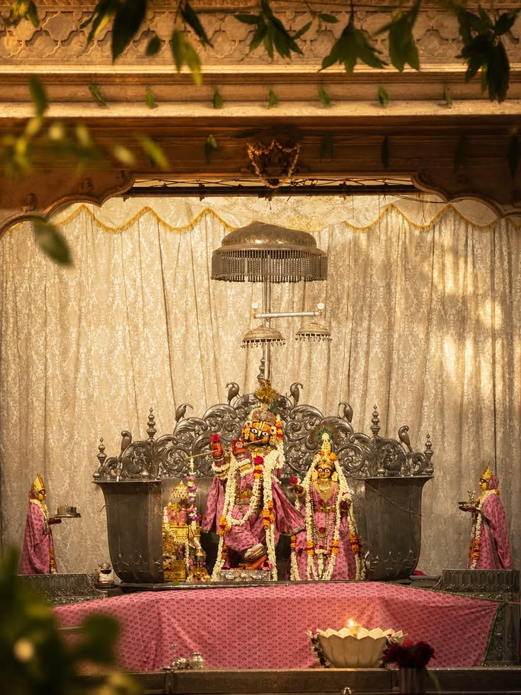
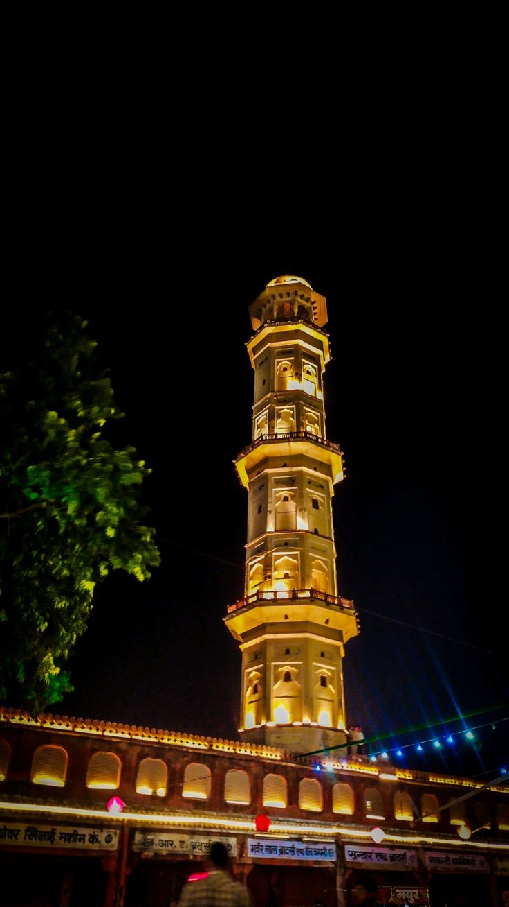
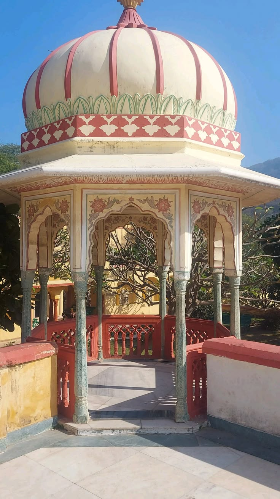

Heritage sites
Twelve places that tell the story of Jaipur. Select a picture to read the history of the site.

Hawa Mahal
The Palace of Winds

Amber Fort
Hilltop palace of the Kachhwahas

City Palace
Home of the royal family

Jantar Mantar
An observatory made of stone

Jal Mahal
The palace in the lake

Nahargarh Fort
The ridge above the Pink City

Jaigarh Fort
The fort of victory

Albert Hall Museum
Jaipur's Indo-Saracenic showpiece

Gaitore Ki Chhatriyan
Royal cenotaphs in marble

Govind Dev Ji Temple
Krishna's temple beside the palace

Isarlat (Sargasuli)
The tower that pierces heaven

Sisodia Rani Garden
A queen's terraced garden